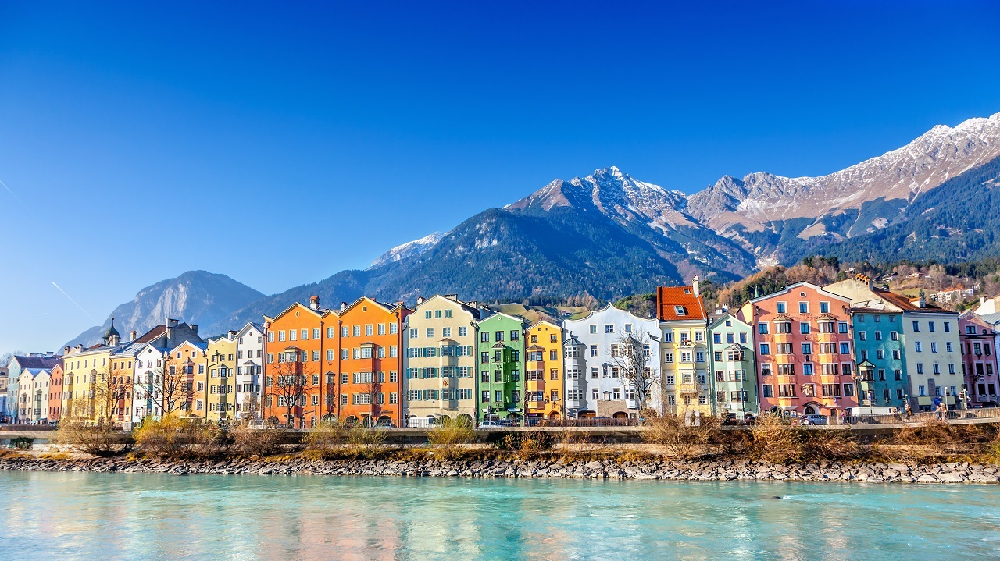

Innsbruck (baw. Innschbruck) – miasto statutarne w Austrii, stolica kraju związkowego Tyrol oraz powiatu Innsbruck-Land, do którego jednak miasto nie należy. Położone jest na wysokości 574 m n.p.m. w dolinie rzeki Inn. Liczy 131 358 mieszkańców (1 stycznia 2023). Około 30 km na południe od miasta znajduje się przełęcz Brenner (1370 m n.p.m.)..